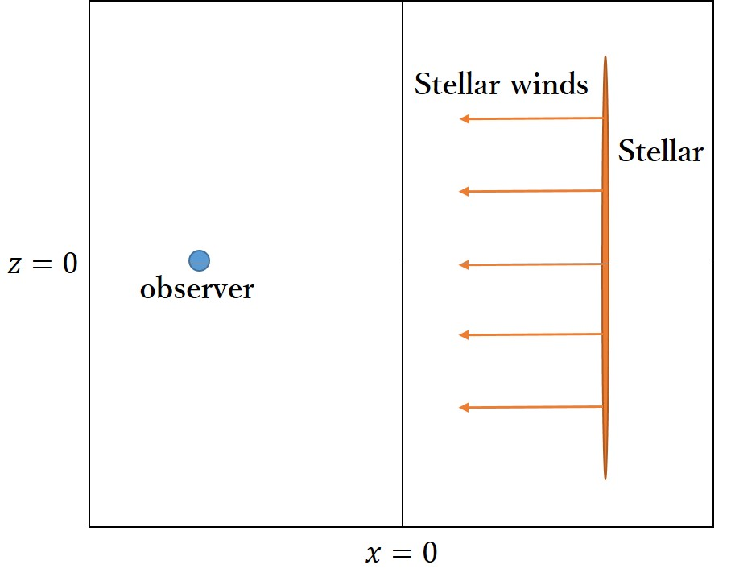
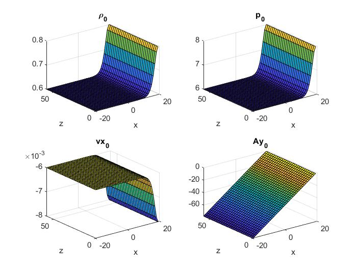
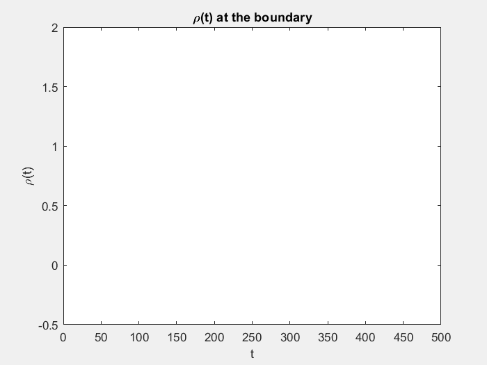
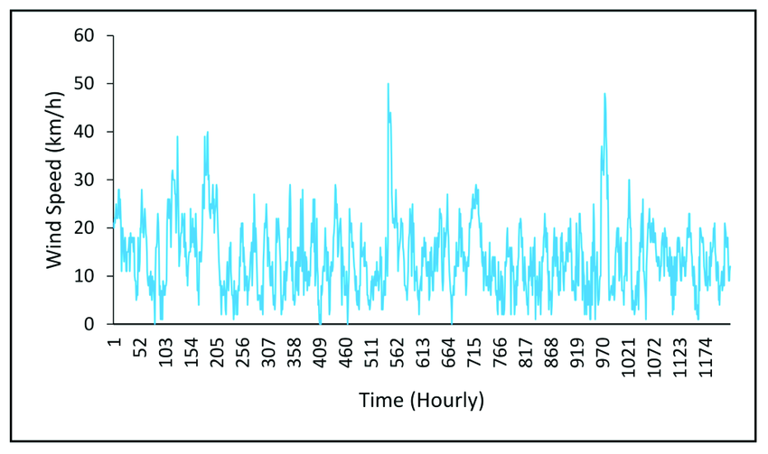
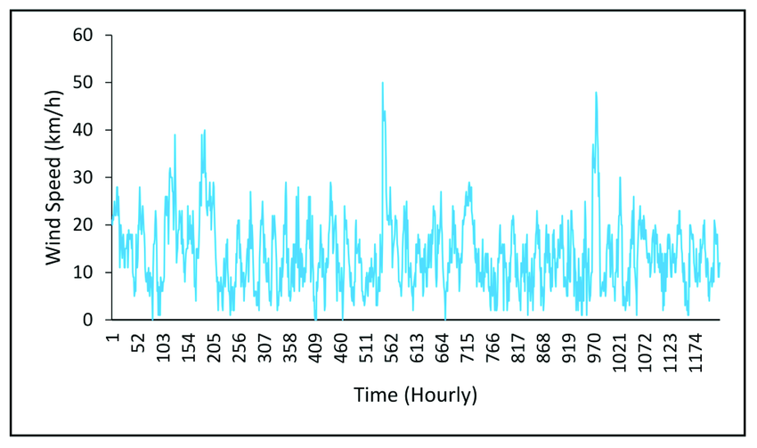
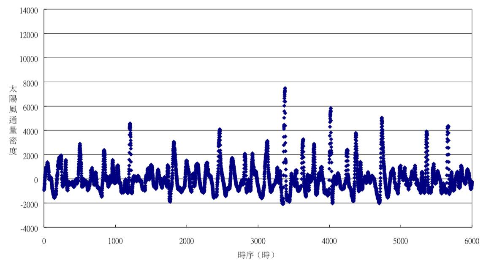

Plasma Astrophysics: Introduction to Magnetohydrodynamics and Simplify Stellar Model
I worked on project in 2024 spring.
Abstract
Plasma holds a pivotal position in the cosmology and astrophysics due to its prevalence. The sun, being a star, is predominantly composed of
plasma, and this composition extends to many other celestial bodies, including most planets. As a result, plasma accounts for over \(99.99\%\) of the observable matter in the universe. In this paper, I will employ MHD equations to simulate a simplified model of stellar winds.
Properties of Plasma
Plasma, the fourth state of matter, that is, a state beyond gas, emerges when gas becomes ionized, featuring charged particles. Certainly, it has no fixed volume or shape, plasma exhibits unique attributes like conductivity and susceptibility to electromagnetic fields. Describing plasma requires nine parameters $$B_x,\; B_y,\;B_z,\;v_x,\;v_y,\;v_z,\;p,\;\rho,\;T,$$
where \(\vec{B}\) is the magnetic field, \(\vec{v}\) is the velocity field, \(p\) is the pressure, \(\rho\) is the mass density, and \(T\) is the temperature, within its equation of state.
Modeling
In order to streamline computational processes,
I opt to confine our analysis to the \(x\) and \(z\) axes within the model,
maintaining an assumption of uniformity in physical attributes along the \(y\)-axis.
In our endeavor to depict stellar winds, we observe a tendency for plasma to aggregate predominantly on the right-hand side and would never exhausted,
mimicking the natural behavior of stars. Through the utilization of numerical methodologies,
we embark on the task of simulating plasma parameters, aiming to capture and emulate these complex phenomena in our model.
Magnetohydrodynamics and MHD Equations
The preceding paragraph elucidates that plasma is a type of compressible fluid that needs to be described by many parameters.
Given that plasma exhibits fluid-like behavior, employing magnetohydrodynamics (MHD) and its associated equations proves invaluable in
characterizing its dynamic traits. MHD seamlessly integrates principles from both electrodynamics and hydrodynamics,
particularly relevant for describing compressible fluids like plasma.
- Derivation of MHD equations
To derive the MHD equations, we start with Ohm's law
$$\vec{j}=\sigma(\vec{E}+\vec{v}\times\vec{B})$$
where \(\vec{j}\) is the current, \(\sigma\) is the conductivity and \(\vec{E}\) is the electric field.
By Maxwell's equations $$\frac{\partial \vec{B}}{\partial t}=-\nabla\times\vec{E}$$
and $$\nabla\times\vec{B}=\mu_0\vec{j},$$
we have
\[
\begin{align*}
\frac{\partial \vec{B}}{\partial t} &= -\frac{1}{\sigma}\nabla\times\vec{j} + \nabla\times(\vec{v}\times\vec{B}) \\
&= \frac{1}{\mu_0\sigma}\nabla^2\vec{B} + \nabla\times(\vec{v}\times\vec{B}).
\end{align*}
\]
Therefore, we have the induction equation \[ \frac{\partial \vec{B}}{\partial t}=\frac{1}{\mu_0\sigma}\nabla^2\vec{B}+\nabla\times(\vec{v}\times\vec{B}). \]
Move forward, we utilize the Navier–Stokes equations of the fluid, which gives \[ \frac {d}{dt}(\rho\vec{v})=\vec{F}_{total}, \]
where \(\vec{F}_{total}\) is the total force of unit volume.
Considering the pressure, the Lorentz force, and the viscosity, where \(\nu\) is the viscosity. We thus have \[ \frac{d}{dt}(\rho\vec{v})=-\nabla p+\vec{j}\times\vec{B}+\nu \nabla^2\vec{v}. \]
Employ the Maxwell's equation, we conclude the momentum equation \[ \frac{d}{dt}(\rho\vec{v})=-\nabla p+\frac{1}{\mu_0}(\nabla\times \vec{B})\times\vec{B}+\nu \nabla^2\vec{v}. \]
Moreover, to describe the evolution of pressure, we need the adiabatic equation \[ \bigg(\frac{\partial }{\partial t}+\vec{v}\cdot\nabla\bigg)\frac{p}{\rho^\gamma}=0, \]
where \(\gamma\) is the adiabatic index.
The last but not the least, we definitely can employ the continuity equation \[ \frac{\partial\rho}{\partial t}+\nabla\cdot(\rho\vec{v})=0. \]
With these four equations, we can simulate the dynamics of the plasma.
- Remarks of MHD equations
The MHD equations encompass three constants \(\gamma,\;1/(\sigma\mu_0)\), and \(\nu\) depending on the species of
plasma (in this project, I take \(\gamma=1.5,\;1/(\sigma\mu_0)=0.01,\;\nu=0.05\) to implement the simulation). and nine unknowns
crucial for describing the state of plasma, facilitating the depiction of its temporal evolution. These equations encapsulate the dynamics of
the electric field and current as well, derived from Maxwell’s equation and Ohm’s law. However, their highly coupled and nonlinear nature
renders them notoriously challenging to solve analytically, leading to a scarcity of exact solutions. This represents the rudimentary
formulation of the MHD equations, where additional effects such as relativistic and radiational impacts are omitted. Incorporating these
effects results in a more intricate formulation of MHD. Consequently, physicists and mathematicians frequently resort to numerical methods
for solving these equations.
Application of MHD equations in Astrophysics
MHD is integral to understanding stellar winds due to its ability to describe the interactions between magnetic fields and plasma dynamics.
In the context of stellar winds, MHD enables scientists to model how magnetic fields influence the acceleration, structure, and energy transfer
within these winds. This framework is particularly important for elucidating the formation of stellar structures such as coronae and for
understanding phenomena like coronal mass ejections and solar flares, which can disrupt stellar wind patterns. Additionally, MHD helps
researchers comprehend how stellar winds interact with the interstellar medium, shaping the dynamics of galaxies and influencing the
formation of stars and planetary systems. Overall, MHD plays a vital role in unraveling the complex behaviors and evolutionary processes
of stellar winds and their impact on the broader cosmic environment.
- Magnetic Reconnection
In the electrifying tapestry of the cosmos, few phenomena rival the captivating dance of magnetic reconnection. This cosmic choreography
occurs when opposing magnetic fields collide, break, and then swiftly reconnect, releasing tremendous amounts of energy in the process.
From the sun's corona to the furthest reaches of interstellar space, magnetic reconnection shapes the dynamics of plasma, drives explosive solar
flares, and powers enigmatic cosmic phenomena. Join us as we embark on an exploration of this fundamental process, unraveling its mysteries,
delving into its implications for space weather, and peering into its role in the grand symphony of the universe. Welcome to the electrifying
world of magnetic reconnection.
- Stellar Winds
Due to the energy released in the magnetic reconnection. The plasma on the surface of the stellar will be released also. This phenomenon
is known as stellar winds released.
Stellar winds, the cosmic exhalations of stars, represent one of the most fascinating and dynamic phenomena in astrophysics.
As stars fuse elements in their cores to sustain themselves, they release a torrent of particles and radiation into space, creating vast,
intricate flows known as stellar winds. These winds are not only mesmerizing in their beauty but also hold profound implications for the
evolution of stars, the formation of planetary systems, and the sculpting of galaxies. In this exploration, we embark on a journey to understand
the origins, mechanisms, and far-reaching effects of these celestial zephyrs, unraveling the mysteries of stellar winds that shape the fabric
of the cosmos.
Numerical Simulation
As elucidated earlier, the complexity of MHD equations renders the derivation of analytic solutions a rare feat. Consequently,
to unravel the intricacies of plasma behavior and dynamics, resorting to numerical methods becomes imperative.
These numerical techniques serve as indispensable aids, enabling us to simulate and analyze the complex interactions within plasma systems,
offering insights that would otherwise remain elusive through purely analytical means.
- Modeling
Given that the mean velocity of stellar winds is approximately \(450\) kilometers per hour, the relativistic effects can be disregarded.
To enhance computational efficiency, I opt to limit our analysis to the \(x\) and \(z\) axes in the model, assuming uniform physical properties along
the \(y\)-axis. As we aim to depict stellar winds, we observe plasma's tendency to accumulate primarily on the right-hand side, continuously
replenishing itself, resembling the behavior of stars. Leveraging numerical methods, we engage in simulating plasma parameters to faithfully
replicate these complex phenomena within our model, as illustrated in the following figure.

The computational model
- Initial Condition
Considering the genesis of stellar winds, it's rational to commence the accumulation of mass density and pressure primarily on the right-hand
side. As a result, the plasma will flow from the stellar to the observer. Additionally, the plasma should possess an initial velocity directed
toward the negative \(x\)-axis. The visual initial condition is demonstrated following.

Initial condition of \(\rho,p,\vec{v},\vec{A}\) (\(v_y=0,A_x=0,A_z=0\))
- Boundary Condition
For the boundary at the left. We learned that when the stellar winds arrive at the earth, the velocity in the \(x\) direction will turn to zero.
As a result, we set the boundary condition for \(\vec{v}\) at the left boundary be \(v_x=0\) and the free boundary condition for \(v_z\).
Similarly, since the plasma will stop on the surface of the stellar, we set \(v_x=0\) on the right boundary also.
Assume that the \(v_z\) is uniform in the \(x\) direction, and set the boundary condition on the right to be \(\partial v_z/\partial x=0\).
In the \(z\) direction, I utilize the periodic boundary condition.
Results

Simulation result of \(\vec{B},\vec{v},\rho\)
Distinguishing itself from the conventional dynamics observed in hydrodynamics,
the plasma under consideration displays a unique behavior,
with the capacity to flow in both the rightward and leftward directions within the system.
As the plasma traverses towards the left-hand side, it undergoes a discernible damping period,
marking a transitional phase in its motion. Meanwhile, the magnetic field surrounding the stellar body,
particularly on the right-hand side, manifests a distinct pattern of twisting,
indicative of the intricate interplay between magnetic forces and plasma dynamics.
This twisting phenomenon stands in stark contrast to the relatively uniform magnetic field observed on the left-hand side.
Moreover, as the system evolves over time, there is a noticeable tendency for the
magnetic field to gradually attain a state of rest or stationary equilibrium, marking a significant aspect of its temporal evolution.

Simulation result of \(\vec{B},\vec{v},\rho\)
The \(\vec{B}\) field noticeably experiences damping initially, gradually stabilizing as time progresses.
Concurrently, the field undergoes discernible changes in its evolution over time,
with the right-hand side twisted more obiviously.
 

Simulation result observed \(v(t)\) v.s. The real world data

Simulation result observed \(\rho(t)\) v.s. The real world data
Comparison
In reality, satellites can measure certain data regarding the stellar winds. This allows us to compare simulation results with real-world observations.
Initially, we observe the intensities of the stellar winds, specifically the mass density perceived by the observer.
This data displays a highly irregular pattern, characterized by sharp and rapid damping-like fluctuations.
Comparing this to real-world satellite data, it becomes evident that achieving identical results is unattainable
due to the inherent complexity and nonlinearity of the equations involved—a common challenge in nonlinear dynamics. Nevertheless,
despite the inherent differences, a notable similarity emerges in the overall trend of both figures. Both exhibit sharp and swift
damping behavior, underscoring a shared tendency despite the complexities involved.
Conclusion
Plasma, with its unique and fascinating characteristics diverging from those of conventional
fluids, sparks a wide spectrum of dynamic phenomena. Despite the inherent complexity of
replicating real-world data in models, numerical simulations offer a powerful tool for studying
and understanding these intricate processes. By leveraging numerical models, we can emulate
real-world observations, shedding light on the behavior of plasma dynamics. The efficacy
of magnetohydrodynamic (MHD) equations in portraying the subtle intricacies of plasma
dynamics becomes increasingly apparent as we delve deeper into our simulations. Moreover,
the wealth of satellite data, detailing the nuanced evolution of parameters like mass density
and wind velocity, resonates and aligns within our computational framework, affirming the
robustness and accuracy of our model in capturing the intricate behaviors of plasma.
8
References
[1] Kulsrud, Russell M. Plasma physics for astrophysics. Vol. 66. Princeton University Press,
2020.
[2] Benz, Arnold O. Plasma astrophysics: Kinetic processes in solar and stellar coronae. Vol.
184. Springer Science & Business Media, 2012.
[3] Lamers, Henny JGLM, and Joseph P. Cassinelli. Introduction to stellar winds. Cambridge
university press, 1999.
[4] Øieroset, M., et al. ”In situ detection of collisionless reconnection in the Earth’s magne-
totail.” Nature 412.6845 (2001): 414-417.
[5] Priest, Eric. Magnetohydrodynamics of the Sun. Cambridge University Press, 2014.
9